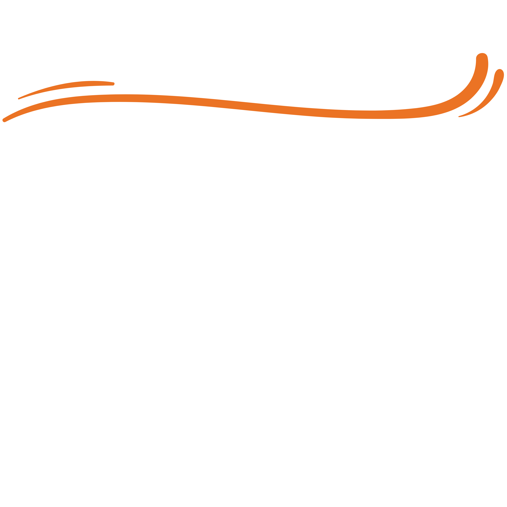
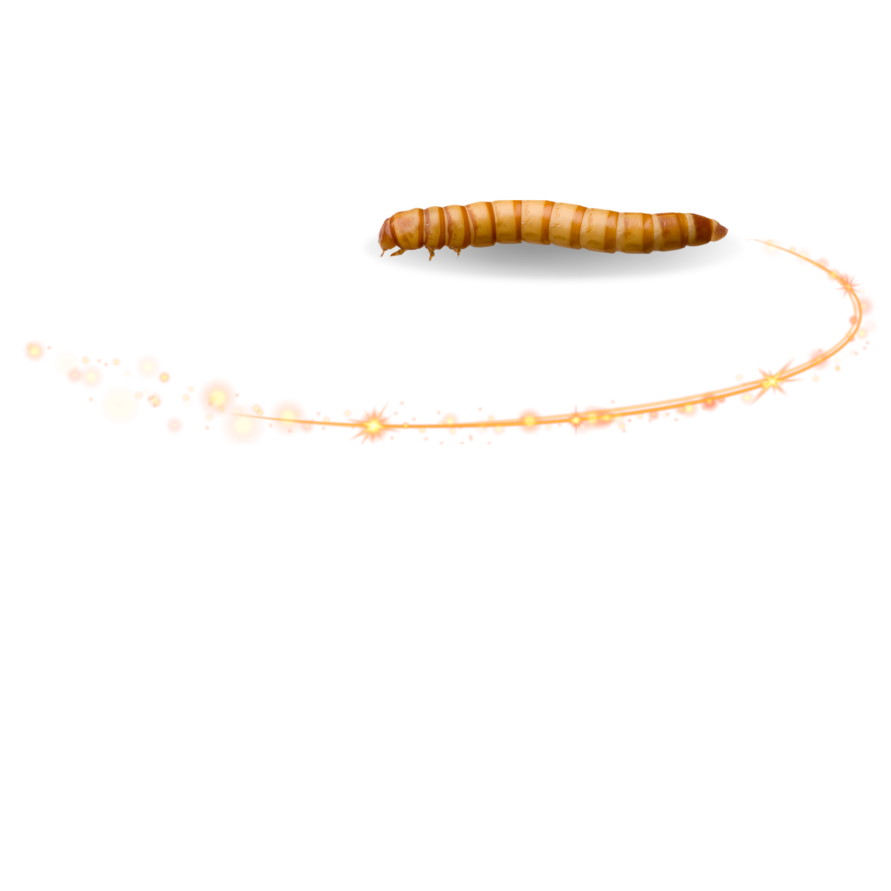

Muito obrigado por adquirir um de nossos produtos!
Caso ainda não tenha adquirido ou está apenas procurando informações adicionais, aqui você encontra um pouco mais sobre nossos tenébrios.
TENÉBRIO GIGANTE

O tenébrio gigante (Zophobas morio), também conhecido como superworm, é uma excelente fonte de nutrição animal.
Embora pertença à mesma família que o tenébrio molitor, possui diferenças notáveis em seu perfil nutricional.
O tenébrio gigante contém aproximadamente 40% de proteína, 30% de gordura e um teor significativo de fibras,
tornando-se uma opção balanceada para a alimentação animal.

Aqui estão alguns dos benefícios de adquiri nossos tenébrios:
- Os tenébrios são uma excelente fonte de proteína, essencial para o crescimento e a manutenção muscular;
- Possuem um alto valor nutricional, ricos em minerais como cálcio e fósforo, além de fibras que auxiliam na digestão;
- Nossos tenébrios são criados com cuidado e higiene, garantindo um produto 100% natural e livre de aditivos químicos;
- Além de serem 100% naturais, são fáceis de digerir, facilitando a absorção de nutrientes pelos animais;
- Os tenébrios são fáceis de armazenar e podem ser mantidos em seu pote original, desde que sejam mantidos em local fresco e seco;
- Estimula o instinto caçador do pet, proporcionando enriquecimento ambiental por serem um alimento vivo;
- Variedade na dieta do seu pet, promovendo uma alimentação balanceada e interessante.
 Larvas
Larvas